Learning Objectives
Recap
In class 6, we have learnt how geometric patterns and number patterns can be generalised using variables and constants.ye variable takes different values which is represented by x, y, zed etcetera and constant has numerical values such as 31, minus7,3divided by10 etcetera.
For example
1) The number of Ice candy sticks required to from one square is four sticks, for two squares is eight sticks, for three squares is twelve sticks and so on.
Continuing in the same way, it is clear that if the number of squares to be formed is k (any natural number), then the number of candy sticks required will be 4 multiplied by k equal to 4 k, where k is ye variable and 4 is ye constant.
This can be observed in the following table:
Number of squares formed |
Number of Ice candy sticks required |
Number of squares 1 |
Number of Ice candy sticks 4 multiplied by 1 equal to 4 |
Number of squares 2 |
Number of Ice candy sticks 4 multiplied by 2 equal to 8 |
Number of squares 3 |
Number of Ice candy sticks 4 multiplied by 3 equal to12 |
So on |
So on |
Number of squares formed k |
Number of Ice candy sticks 4 multiplied by k equal to4 k |
So on |
So on |
2) Observe the following pattern
7 multiplied by 9 equal to 9 multiplied by 7,
23 multiplied by 56 equal to 56 multiplied by 23
999 multiplied by 888 equal to 888 multiplied by 999
This can be generalised as ye multiplied by b equal to b multiplied by ye, where ye, b are variables.
Try these
1. Identify the variables and constants among the following terms:
ye,11 minus 3 x, x y, minus 89, minus m, minus n,5,5 ye b, minus 5,3y,8p q r,18, minus 9 t, minus 1, minus 8
2. Complete the following table:
Serial Number |
Verbal statements |
Algebraic statements |
Serial Number 1 |
Verbal statements 12 more than x |
Calculate Algebraic statements |
Serial Number 2 |
Calculate Verbal statements |
Algebraic statements M minus 7 |
Serial Number 3 |
Calculate Verbal statements |
Algebraic statements 2 p+1 |
Serial Number 4 |
Verbal statements Twice the sum of y and zed |
Calculate Algebraic statements |
Serial Number 5 |
Calculate Verbal statements |
Algebraic statements 2 k minus 3 |
Serial Number 6 |
Verbal statements 5 is reduced from the product of x and y |
Calculate Algebraic statements |
Note: Algebraic statements are also known as Algebraic expressions.
Consider the situation. Murugan’s mother gave him Rupees 100 to buy 1 kilogram of sugar. If the shopkeeper returned Rupees 58, what is the price of sugar?
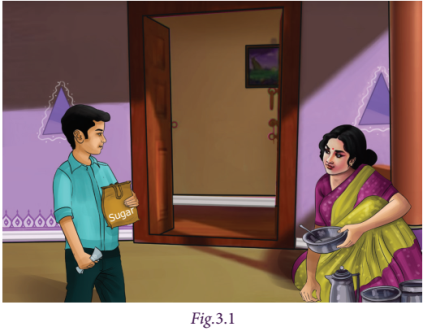
Let us see another situation. Jayashri wants to share chocolates among her friends on her birthday. She had Rupees 190 in her piggy bank. If she could buy 95 chocolates with that amount, then what is the price of one chocolate?
Did you get the answers? How did you work out?
You might have created numeric expressions like 100 minus 58 equal to question mark (?) and 190divided by95equal to question mark (?) and then solved it. Isn’t it? In both cases, question mark (?) stands for an unknown value. Instead of using question marks everytime, we could use the letters like x, y, a, b, etcetera
Let us learn more about this interesting branch of mathematics which deals with the methods of finding the unknown values.
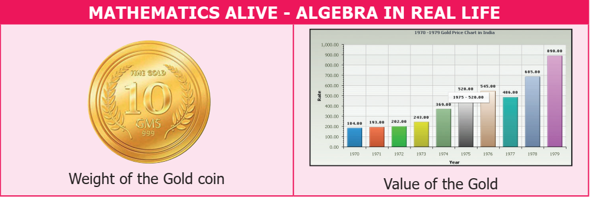
We combine variables and constants using the mathematical operations addition and subtraction to construct algebraic expressions.
For example, the expression 6x+1 is obtained by adding two parts 6x and 1.Here 6x and 1 are known as terms.The term6x is ye variable and the term 1 is ye constant, since it is not multiplied by ye variable. Also we say that 6, x are the factors of the term6x.
Similarly, in the expression3 ye b+5c, the terms are 3 ye b and 5c.The factors of the term 3 ye b are 3, ye and. b In the same way, the factors of the term 5c are 5 and c.
Now let us further try to understand the terms of an algebraic expression.
Observe the figure 3.2
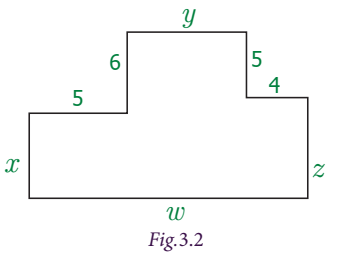
What is the perimeter of the given figure?
The perimeter, ‘P’ equal to x+5+6+y+5+4+zed+w units,
equal to x+y+zed+w+(5+6+5+4)
equal to x+y+zed+w+20
Where x,y,zed,w are variables and 20 is constant.
Note that, in the above expression, 5 terms are combined by using addition.
Consider another example as. 6x minus 5y+3 To find the terms of the expression, we write 6x+(minus 5y)+3. Here the terms are 6x,(minus 5y) and 3. An expression may have one, two, three or more terms.
Also,ye term may be any one of the following:
1) ye constant such as 8,minus 11,7,minus 1, etcetera
2) ye variable such as x ,ye ,p ,y, etcetera
3) ye product of two or more variables such as x y,p q,ye b c, etcetera
4) ye product of constant and ye variable or variables such as 5x,minus 7 p q,3 ye b c, etcetera
Think
Can we use the operations multiplication and division to combine terms?
Note
An algebraic expression can have one term, two terms or more than two terms.An expression with one term is called ye monomial, two terms is called ye binomial and three terms is called ye trinomial. An expression with one or more terms is called ye polynomial. For example, the expression 2x is ye monomial, 2 x+3 y is ye binomial, and 2 x+3 y+4 zed is ye trinomial. All the expressions given above are polynomials.
Activity
To further strengthen the understanding of variables and constants let us do the following activity.
Consider, two baskets of cards.One containing constants and the other containing variables.Pick ye constant from the first basket and ye variable from the second basket and form ye term by expressing it as ye product. Write all the possible terms that can be constructed using the given constants and variables.
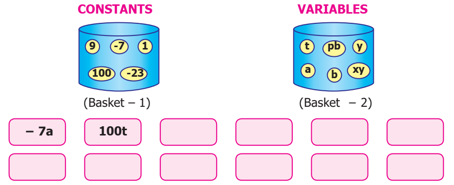
Try this
Complete the following table by forming expressions using the terms given. One is done for you.
Terms |
Algebraic Expressions |
|
|
|
Terms 7 x,2 y,minus 5zed |
Algebraic Expressions 7 x+2 y |
2 y minus 5 zed |
7 x minus 5 zed |
7 x+2 y minus 5 zed |
Terms 3 p,4 q,5 r |
Form the Algebraic Expressions |
Form the Algebraic Expressions |
Form the Algebraic Expressions |
Form the Algebraic Expressions |
Terms 9 m,n,minus 8 k |
Form the Algebraic Expressions |
Form the Algebraic Expressions |
Form the Algebraic Expressions |
Form the Algebraic Expressions |
Terms ye,minus 6 b,3 c |
Form the Algebraic Expressions |
Form the Algebraic Expressions |
Form the Algebraic Expressions |
Form the Algebraic Expressions |
Terms 12 x y,9 x,minus y |
Form the Algebraic Expressions |
Form the Algebraic Expressions |
Form the Algebraic Expressions |
Form the Algebraic Expressions |
Example 3.1
Identify the variables, terms and number of terms in each of the following expressions:
1) 12 minus x
2) 7+2 y
3) 29+3x+5 y
4) 3x minus 5+7 zed
Solution
Serial Number |
Expressions |
Variables |
Terms |
Number of terms |
Serial Number 1 |
Expressions 12 minus x |
Variables x |
Terms 12,minus x |
Number of terms 2 |
Serial Number 2 |
Expressions 7+2 y |
Variables y |
Terms 7,2 y |
Number of terms 2 |
Serial Number 3 |
Expressions 29+3 x+5 y |
Variables x,y |
Terms 29,3 x,5 y |
Number of terms 3 |
Serial Number 4 |
Expressions 3 x minus 5+7 zed |
Variables x,zed |
Terms 3 x,minus 5,7 zed |
Number of terms 3 |
ye term of an algebraic expression is ye product of factors. Here each factor or product of factors is called the co-efficient of the remaining product of factors.
For example, in the term 5 x y,5 is the co-efficient of remaining factor product, x y.Similarly x is the co-efficient of 5 y; 5 x is the co-efficient of y.The constant 5 is called the numerical co-efficient, and others are called simply co-efficients.
ye co-efficient can either be ye numerical factor or an algebraic factor or product of both.
Since we often talk about the numerical co-efficients of ye term, if we say “co-efficient” it will be understood that we are referring to the numerical co-efficient.If no numerical co-efficient appears in ye term, then the co-efficient is understood to be 1.
Consider the term minus 6 ye b. It is the product of three factors minus 6,ye and b.Also it can be written as ye product of two factors such as minus 6 ye multiplied by b,minus 6 b multiplied by ye and minus 6 multiplied by ye b.
The co-efficient of ‘ye’ is minus 6 b
The co-efficient of ‘b’ is minus 6 ye
The co-efficient of ‘ye b’ is minus 6
Thus -6 is the numerical co-efficient in the term minus 6 ye b.
Example 3.2
Find the numerical co-efficient of the following terms.Also, find the co-efficient of x and y in each of the term:3 x, minus 5 x y,minus y zed,7 x y zed,y,16 y x.
Solution
Term |
Numerical co-efficient |
Co-efficient of x |
Co-efficient of y |
Term 3 x |
Numerical co-efficient 3 |
Co-efficient of x 3 |
Co-efficient of y Not possible |
Term Minus 5 x y |
Numerical co-efficient Minus 5 |
Co-efficient of x Minus 5 y |
Co-efficient of y Minus 5 x |
Term Minus y zed |
Numerical co-efficient Minus 1 |
Co-efficient of x Not possible |
Co-efficient of y Minus zed |
Term 7 x y zed |
Numerical co-efficient 7 |
Co-efficient of x 7 y zed |
Co-efficient of y 7 x zed |
Term y |
Numerical co-efficient 1 |
Co-efficient of x Not possible |
Co-efficient of y 1 |
Term 16 y x |
Numerical co-efficient 16 |
Co-efficient of x 16 y |
Co-efficient of y 16 x |
When you visit ye market, you can see that, the vegetables and fruits of same kind are kept as separate heaps. Similarly, we can group the same kind of terms in an algebraic expression.
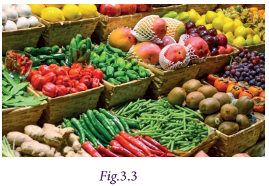
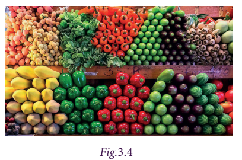
For example, the expression 7 x+5 x+12 x minus 16 has 4 terms but the first three terms have the same variable factor x. We say that 7x,5x and 12x are like terms.
However, the terms 12 x and minus 16 have different variable factors. The term 12x has the variable x and the term minus 16 is ye constant.Such terms are called unlike terms.
Consider another example. In the expression 14 xy minus 7y minus 12 y x+5 y minus 10, the terms minus 7 y and 5 y are like terms. Also, 14 x y and minus 12 y x are like terms.But , we cannot group the terms 14 x y,7 y and minus 10, as they do not have the same variables, thus called unlike terms.
Hence, the terms of an expression having the same variable(s) are called like terms; otherwise, they are called unlike terms. The followig activity is helpful in identifying the like terms and unlike terms.
Try this
Identify the like terms among the following and group them:
7 x y,19 x,1,5 y, x,3 y x,15, minus 13 y,6 x,12 x y, minus 5,16 y, minus 9 x,15 x y,23,45 y, minus 8 y,23 x, minus y,11.
Note
Terms with the variables x y and y x are like terms, because of the commutative property of multiplication x multiplied by y equal toy multiplied by x. Also, terms obey the commutative property of addition, that is x +y equal to y +x.
Points to remember while identifying like terms are as follows:
1) In each of the term ignore numerical co-efficient.
2) Observe the algebraic variables of the terms. They must be the same. (Here the order in which the variables are multiplied should not be considered).
Sometimes we would like to assign definite values to the variables in an expression to find the value of that expression. This situation arises in many real-life problems.
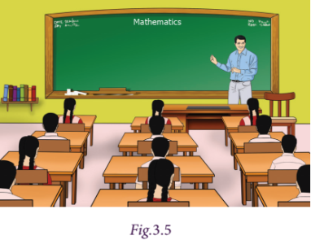
For example, if the teacher of class 7 wants to select 10 students for ye competition, for which she can choose any number of boys and girls.
If the number of boys are x and the number of girls are y, then the required algebraic expression to find the total number of participants is. x+y
Here, the total number of students to be selected is 10 and if only two girls are interested to participate in the competition, then how many boys shuld be selected? Obviously, if y equal to2 then x+2 equal to10. The value xequal to8 satisfies the equation. So, the number of boys to be selected is 8.
Follow the steps to obtain the value.
Step 1
Study the problem. Fix the variable and write the algebraic expression.
Step 2
Replace each variable by the given numerical value to obtain an numerical expression.
Step 3
Simplify the numerical expression by BIDMAS method.
Step 4
The value so obtained is the required value of the expression.
Try this
Try to find the value of the following expressions, if p equal to 5 and q equal to 6.
1) p+q
2) q minus p
3) 2p+3q
4) pq minus p minus q
5) 5pq minus 1
Example 3.3
If x equal to 3,y equal to 2 find the value of,
1) 4x+7y
2) 3x+2y minus 5
3) x minus y
Solution
1) 4x+7y equal to4 multiplied by 3+7 multiplied by 2equal to12+14equal to26
2) 3x+2y minus 5equal to3 multiplied by (3)+2 multiplied by (2) minus 5equal to9+4 minus 5equal to8
3) x minus y equal to3 minus 2equal to1
Example 3.4
Find the value of,
1) 3 yem + 2 n
2) 2 yem minus n
3) yem n minus 1, given that yem equal to 2,n equal to minus 1.
Solution
1) 3 yem + 2 n equal to 3 multiplied by (2) + 2 multiplied by (minus 1) equal to 6 minus 2 equal to 4
2) 2 yem minus n equal to2 multiplied by (2) minus (minus 1) equal to 4 + 1 equal to 5
3) yem n minus 1 equal to (2) multiplied by ( minus 1) minus 1equal to minus 2 minus 1equal to minus 3
Exercise 3.1
1. Fill in the blanks:
1) The variable in the expression 16 x minus 7 is dash
2) The constant term of the expression 2 y minus 6 is dash
3) In the expression25 yem+14 n, the type of the term are dash terms.
4) The number of terms in the expression 3 ye b+4c minus 9 is dash
5) The numerical co-efficient of the term minus x y is dash.
2. Say True or False.
1) x+( minus x)equal to0
2) The co-efficient of ye b in the term 15 ye b c is. 15
3) 2 p q and minus 7 q p are like terms
4) When y equal to minus 1, the value of the expression 2 y minus 1 is 3
3. Find the numerical coefficient in each of the following terms: minus 3 y x,12 k,y,121 b c, minus x,9 p q,2 ye b
4. Write the variables, constants and terms of the following expressions.
1) 18 + x minus y
2) 7 p minus 4 q + 5
3) 29 x + thirteen y
4) b + 2
5. Identify the like terms amont the following: 7x, 5y, minus 8x,12y,6zed,zed, minus 12x, minus 9y,11zed
6. If x equal to 2and y equal to3,then find the value of the following expressions.
1) 2x minus 3y
2) x+y
3) 4y minus x
4) x+1 minus y
Objective type questions
7. An algebraic expressions which is equivalent to the verbel statement “Three times the sum of x and y is
1) 3 multiplied by (x+y)
2) 3+x+y
3) 3x+y
4) 3+xy
8. The numerical co efficient of minus 7 yem n is
1) 7
2) minus 7
3) p
4) minus p
9. Choose the pair of like terms
1) 7p,7x
2) 7r,7x
3) minus 4x,4
4) minus 4x,7x
10. The value of 7ye minus 4 b when ye equal to3,b equal to 2is
1) 21
2) 13
3) 8
4) 32
We have discussed about algebraic expressions. Now, let us see how to add and subtract algebraic expressions.
Situation:
Kannan has some number of beads and Aravind has 20 beads more than Kannan. Kavitha says that she has 3 more beads than the number of beads that Kannan and Aravind together have. How will you find the number of beads that Kavitha have?
Now we see that even though 3 persons are involved with 3 unknown quantities, we make use of one variable, since all the three variables are related.
Let that one variable be x which represents the number of beads that Kannan has.
Aravind has 20 more beads than Kannan. That is. x + 20
Kavitha has 3 beads more than Kannan and Aravind have together. So, the number of beads that Kavitha has is given by x+ x+ 20+3.
Now, we change the situation. Instead of Aravind has 20 more beads than Kannan, suppose Aravind has 20 beads less than Kannan.
If Kavitha has 3 beads more than what Kannan and Aravind have together, then find the number of beads that Kavitha has.
Now, Aravind has x minus 20 beads. So, the number of beads that Kavitha has, is given by x+x minus 20 +3.
For example, to add 8 ye b, 4 ye b, and 2 ye b, where ye b is variable, we add the co efficients alone, that is 8 ye b+4 ye b+2 ye b equal to(8+4+2) ye b equal to14 ye b equal to14 ye b.
In the same way, we can add the algebraic expressions. Let us try to add the expressions 11y+7 and 5y minus 3, where 11y and 5y are like terms with ye variable y and 7 and minus 3 are constants (like terms).
Hence, (11 y+7)+(5 y minus 3)equal to [11 y+5 y]+[7+( minus 3)]
equal to(11+5) y+(7 minus 3)
equal to16 y +4.
Try this
Add the terms:
1) 3 p,14 p
2) yem,12 yem,21 yem
3) 11 ye b c,5 ye b c
4) 12 y, minus y
5) 4 x,2 x, minus 7 x
Example 3.5
Add the expressions:
1) p q minus 1 and 3 p q+2
2) 8 x+3 and 1 minus 7 x
Solution
1) p q minus 1 + 3 p q+2 equal to(p q+3 p q)+( minus 1+2)
equal to (1+3) p q+1
equal to 4 p q+1
2) 8x +3 + 1 minus 7x equal to 8x+3+1 minus 7x
equal to (8x minus 7x)+(3+1)
equal to (8 minus 7) x+4
equal to x+4
Subtraction of ye term can be looked as addition of its additive inverse as we saw in subtraction of integers. To understand subtraction of algebraic expression, let us consider subtraction of algebraic expression with one term.
For example, to subtract 6 y from 12 y, we can add 12 y and (minus 6 y).
Thus we have, 12 y+( minus 6y)equal to12 y minus 6y
equal to(12 minus 6) yequal to6 y.
Now, let us subtract minus yem n from 3 yem n. Additive inverse of minus m n is mn. Hence, we have to add yem n with 3 yem n. Thus, 3 yem n + m nequal to(3+1) yem n equal to 4 yem n
Similarly, we can subtract two algebraic expressions. For example, to subtract 13 ye minus 2 from
25 ye + eleven, we have to add the additive inverse of 13 ye minus 2 with 25 ye + eleven
Additive inverse of 13 ye minus 2 is minus (13 ye minus 2) equal to minus 13 ye + 2
Therefore, 25 ye+ eleven minus (13 ye minus 2)equal to(25 ye + eleven)+( minus 13 ye + 2)
equal to(25 ye minus 13 ye) + (eleven + 2)
equal to12 ye + 13
Note
1. Subtracting 4y is the same as adding minus 4y and subtracting minus 11x is the same as adding 11x.
2. We know that, minus 3 is the additive inverse of 3. In the same way minus x is an additive inverse of x. Hence, x, minus x are equal in numerical value; but opposite in sign. Therefore, x+( minus x)equal to0. But, x minus (minus x)equal tox+xequal to2x.
Example 3.6
Subtract:
1) 7pq from 11pq
2) minus ye from ye
3) 5x+7 from 21x+9
Solution
1) 11 p q minus 7 p q. Additive inverse of 7 p q is minus 7 p q
11 p q+( minus 7 p q)equal to11 p q minus 7 p qequal to(11 minus 7) p qequal to4 p q
2) ye minus (minus ye) Additive inverse of minus ye is ye
So, ye+ye equal to2 ye
3) 21x+9 minus (5x+7). Additive inverse of 5x+7is minus (5x+7)
(21x+9)+[ minus (5x+7)] equal to(21x+9) minus (5x+7)
equal to21x+9 minus 5x minus 7
equal to(21 minus 5) x+(9 minus 7)
equal to16x+2.
Think
3x+(y minus x) equal to3x+y minus x But, 3x minus (y minus x)≠3x minus y minus x. Why?
Example 3.7
Simplify: 100x+ ninety nine y minus 98z+ ten x+ ten y+ ten zed minus x minus y+zed
Solution
In the given algebraic expression, x, y, zed are the varibles.
Let us group like terms.
100x+ ninety nine y minus 98 zed+ ten x+ ten y+ ten zed minus x minus y+zed
equal to(100x+ ten x minus x)+( ninety nine y+ ten y minus y)+( minus 98zed+ ten zed+zed)
equal to(100+ ten minus 1)x+( ninety nine + ten minus 1)y+( minus 98+ ten +1)zed
equal to(110 minus 1)x+(109 minus 1)y+( minus 98+11)zed
equal to109x+one hundred and eight y+( minus 87)zed
equal to109x+ one hundred and eight y minus 87zed
Note
For adding or subtracting algebraic expressions, we can write the like terms one after the other horizontally by using brackets or one below the other vertically.
Example 3.8
1) Add: 3x minus 4y+zed and 2x minus zed+3y
2) Subtract: 2x minus 5y from 4x+3y
Solution
1) (3x minus 4y+zed) +( 2x minus zed+3y)
equal to(3x+2x)+( minus 4y+3y)+(zed minus zed)
equal to(3+2)x+( minus 4+3)y+(1 minus 1)zed
equal to 5x minus 1y+ zero zed
equal to 5x minus y
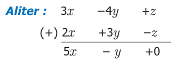
2) (4x+3y) minus (2x minus 5y)
equal to(4x+3y)+( minus 2x+5y)
equal to(4x minus 2x)+(3y+5y)
equal to(4 minus 2)x+(3+5)y
equal to2x+8y
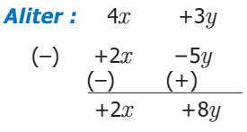
Think
What will you get if twice ye number is subtracted from thrice the same number?
Example 3.9
Mani and his friend Mohamed went to ye hotel for dinner. Mani had 2 idlys and 2 dosas whereas Mohamed had 4 idlys and 1 dosa. If the price of each idly and dosa is xand yrespectively, then find the bill amount in xand y.
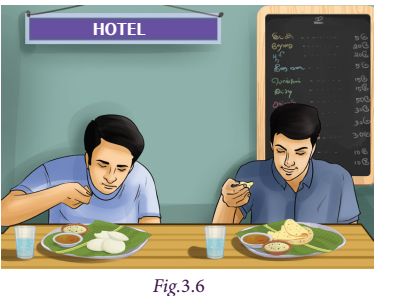
Solution
Given that, the price of one idly is ‘x’ rupees and the price of one dosa is ‘y’ rupees
So, Mani’s bill amount: (2 multiplied by x) + (2 multiplied by y) equal to (2x+2y)
Mohamed’s bill amount: (4 multiplied by x) + (1multiplied by y) equal to 4x+y
Therefore, the total bill amount equal to (2x+2y) + (4x+y)
equal to (2+ 4) x + (2 +1) y equal to 6 x+ 3 y
Aliter:
In total, they had 2 + 4 equal to6 idly’s that is. 6 multiplied by x equal to6 x and
2+1 equal to3 dosa’s that is 3 multiplied by y equal to3 y
Therefore, the total bill amount equal to 6x + 3y
Example 3.10
Rani earns Rupees 200 on the first day and spends some amount in the evening. She earns Rupees 300 on the second day and spends double the amount as she spent on the first day. She earns Rupees 400 on the third day and spends 4 times the amount as she spent on the first day. Can you give an algebraic expression of the total amount with her, at the end of the third day?
Solution
The amount earned on the first day is Rupees 200
Let the amount spent on the first day be Rupees x. Amount with her at the end of the first day is (200 minus x)
Amount earned on the second day is Rupees 300 and the amount spent on the second day is Rupees 2x. The amount left on the second day is 300 minus 2x.
Similarly, the net amount that she would have on the third day is 400 minus 4x. Therefore, the total amount that she would have at the end of three days is (200 minus x) + (300 minus 2x) + (400 minus 4x)
That is, 200+300+400+(minus 1 minus 2 minus 4) x equal to 900+( minus 7) x
Thus, the required algebraic expression is 900 minus 7x
Activity
Here is ye magic number trick that you can perform using Algebra.
Choose any number of your choice |
If it is 2 |
If it is 3 |
If it is 4 |
General term ‘x’ |
Add 2 to this number |
Add 2+2equal to4 |
Add 3+2equal to5 |
Add 4+2equal to6 |
Add x+2 |
Multiply the sum by 5 |
Multiply 4 multiplied by 5 equal to twenty |
Multiply 5 multiplied by 5equal to25 |
Multiply 6 multiplied by 5equal to 30 |
Multiply 5 multiplied by (x+2) equal to 5x+ ten |
Add ten to the product |
Add twenty +ten equal to30 |
Add 25+ ten equal to35 |
Add 30+ten equal to 40 |
Add 5x + ten +ten equal to 5x+ twenty) equal to 5 multiplied by (x+4) |
Divide the sum by 5 |
Divide 30 divided by5 equal to6 |
Divide 35 divided by5 equal to7 |
Divide 40 divided by5 equal to8 |
(5 multiplied by (x+4)) divided by5equal tox+4 |
Subtract the original number |
Subtract 6 minus 2equal to4 |
Subtract 7 minus 3equal to4 |
Subtract 8 minus 4equal to4 |
Subtract x+4 minus x equal to4 |
The final result is |
The final result is 4 |
The final result is 4 |
The final result is 4 |
The final result is 4 |
Everyone will get the same result 4 irrespective of the number they think. Play this number game with your friends and surprise them. We generalized the pattern in the final column using algebraic expressions. Observe the same and create your own number game and verify whether it works for any number by finding the general term.
Exercise 3.2
1. Fill in the blanks.
1) The addition of minus 7b and 2b is dash
2) The subtraction of 5 yem from minus 3 yem is dash
3) The additive inverse of minus 37 x y zed is dash
2. Say True or False.
1) The expressions 8x+3y and 7x+2y cannot be added.
2) If x is ye natural number, then x+1 is its predecessor.
3) Sum of ye minus b + c and minus ye + b minus c is zero.
3. Add:
1) 8x, 3x
2) 7 yem n, 5 yem n
3) minus 9y, 11y, 2y
4. Subtract:
1) 4 k from 12 k
2) 15 q from 25 q
3) 7 x y zed from 17 x y zed
5. Find the sum of the following expressions.
1) 7 p + 6 q, 5 p minus q, q + 16 p
2) ye + 5 b + 7 c, 2 ye+ 10 b + 9 c
3) yem n + t, 2 yem n minus 2t, minus 3 t+3 yem n
4) u + v, u minus v, 2u+5v, 2u minus 5v
5) 5 x y zed minus 3 x y, 3 zed x y minus 5 y x
6. Subtract.
1) 13 x + 12 y minus 5 from 27 x + 5 y minus 43
2) 3 p+5 from p minus 2 q+7
3) yem + n from 3 yem minus 7n
4) 2 y + zed from 6 zed minus 5 y
7. Simplify.
1) (x + y minus zed) + (3 x minus 5 y + 7 zed) minus (14x+7y minus 6 zed)
2) p+p+2+p+3 minus p minus 4 minus p minus 5+p+10
3) n+(yem+1) + (n+2) + (yem+3) + (n+4) + (yem+5)
Objective type questions
8. The addition of 3 yem n, minus 5 yem n, 8 yem n and minus 4 yem n is
1) yem n
2) minus yem n
3) 2 yem n
4) 3 yem n
9. When we subtract ‘ye’ from ‘minus ye’, we get dash
1) 0
2)2 ye
3) minus 2 ye
4) minus ye
10. In an expression, we can add or subtract only
1) Like terms
2) Unlike terms
3) All terms
4) None of the above
Now, let us learn to construct simple linear equations and solve them.
Consider an expression 7x+3, where x is the variable.
When x equal to2, the value of the expression is (7 multiplied by 2) + 3 equal to 14+3 equal to17
Also, this can be written as 7x+3 equal to17, when x equal to 2, 7 x + 3 equal to 17 is called an equation.
Moreover, no value of x other than 2 satisfies the Equation 7x+3equal to17,Thus x equal to2 is called the solution to the equation 7x+3 equal to17.
An equation, is always equated to either ye numerical value or another algebraic expression. The equality sign shows that the value of the expression to the left of the 'equal to' sign is equal to the value of the expression to the right of the 'equal to' sign. In the above example, the expression 7x+3 on the left side is equal to the constant 17 on the right side.
In general, the Right Hand Side (RHS) of an equation is just ye number. But, this need not be always be so. The Right Hand Side (RHS) may be an expression containing the variable. For example, the equation 7x+3equal to3x minus 1 has the expression 7x+3 on the left and 3x minus 1 on the right separated by an equality sign.
Let us look at some situations where we have the value of an expression without actually knowing the values of each of the variables.
The cost of 10chairs and 4 tables is Rupees four thousand. We are not given the price of ye chair or ye table. Let us take the price of one chair Rupees x and one table as Rupees y. Then the cost of 10 chairs and 4tables is 10x+4y. Therefore, 10x+4y equal to four thousand .This is an equation in two variables x and y taking the value four thousand. Let us consider some more examples and find the algebraic equation.
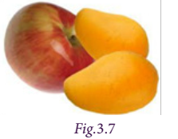
1. The cost of an apple and 2 mangoes is Rupees 120
If the price of an apple is ye and one mango is yem, then the required equation is ye+2 yem equal to120
2.ye rectangle of some dimensions has perimeter 50 centimetre
If l and b are the length and breadth of the rectangle then we write 2 (l + b) equal to 50
3. Thamarai is 4 years elder to her sister Selvi and sum of their ages is 24
The ages of Thamarai and her sister are treated as variables. Although, their ages are different, we consider this as one variable, because the age of Thamarai is associated to the age of Selvi.
Suppose, if Selvi’s age is 10, then the age of Thamarai is 10+4 equal to14. In the same way, if the age of Selvi is x, then the age of Thamarai is x+4. Thus, we can from an equation as x+(x+4) equal to 24. Otherwise, 2x+4equal to24.
Hence an equation can be looked as algebraic expression equated to either ye constant or any other algebraic expression.
Try these
Try to construct algebraic equations for the following verbal statements.
1. One third of ye number plus 6 is 10
2. The sum of five times of x and 3 is 28
3. Taking away 8 from y gives 11
4. Perimeter of ye square with side ye is 16 centimetre
5. Venkat’s mother’s age is 7 years more than 3 times Venkat’s age. His mother’s age is 43 years.
An equation is like ye weighing balance with equal weights on both of its pans, in which case the arm of the balance is exactly horizontal.
If we add the same weights to both the pans, the arms remain horizontal. In the same way, if we remove the same weights from both the pans, then also the arm remains horizontal. We use the same principle for solving an equation.
We use the following principles to separate the variables and constants thereby solving an equation.
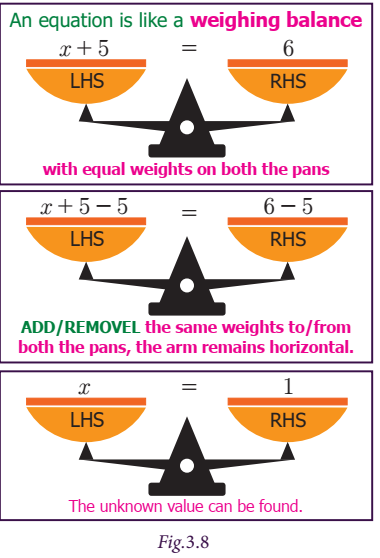
1. If we add or subtract the same number on both sides of the equation, the value remains the same. For example, to solve x+5 equal to12, we have to subtract 5 on both sides, for separating the constants and variables of the equation, that is x+5 minus 5 equal to12 minus 5 x+0 equal to7 Hence x equal to7 [since 0 is the additive identity]
Think
Why should we subtract 5 and not some other number? Why don’t we add 5 on both sides? Discuss.
2. Similarly, if we multiply or divide the equation with the same number on both sides, the equation remains the same. For example, to solve the equation 5y equal to 20, divide by 5 on both sides.
Thus, we have 1 divided by 5 multiplied by 5y equal to 1 divided by 5 multiplied by 20
Y equal to 20 divided by 5
Therefore, y equal to 4
3. An equation remains the same, when the expressions on the left and on the right are interchanged. The equation 7x+3 equal to 17 is the same as 17 equal to7x+3. Similarly, the equation 7x+3 equal to3x minus 1 is the same as 3x minus 1 equal to7x+3.
Try this
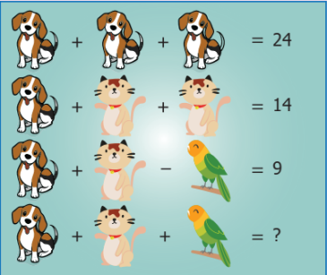
If the dogs, cats and parrots represent unknowns, find them. Substitute each of the values so obtained in the equations and verify the answers.
Example 3.11
Find two consecutive natural numbers whose sum is 75.
Solution
The numbers are natural and consecutive. Let the numbers be x and x+1
Given that,
x+(x+1) equal to75
2x+1 equal to75
2x+1 minus 1 equal to75 minus 1 [Subtract 1 on both sides]
2x+zero equal to 74
2x divided by 2equal to 74 divided by 2 [Divide by 2 on both sides]
X equal to37 and x+1equal to38
Therefore, the required numbers are 37 and 38.
Example 3.12
A person has Rupees 960 in denominations of Rupees 1, Rupees 5 and Rupees 10 notes. The number of notes in each denomination is equal. What is the total number of notes?
Solution
Let the number of notes in each denomination be x
Then x+5x+ ten x equal to 960
(1+5+ten ) x equal to 960
16 x equal to 960
Divide by 16 on both the sides,
16x divided by16 equal to 960 divided by16
Therefore, x equal to 60
Thus, the number of notes in each denomination is 60.
Example 3.13
In an examination,ye student scores 4 marks for every correct answer and loses one mark for every wrong answer. If he answers 60 questions in all and gets 130 marks, find the number of questions he answered correctly.
Solution
Let the number of correct answers be x
Thus the number of wrong answers equal to60 minus x
Then, 4x minus 1(60 minus x)equal to130
4x minus 60+xequal to130
4x+x minus 60+60equal to130+60 [Add 60 on both sides]
5x+0 equal to190
5xequal to190
Divide by 5 on both the sides,
5x divided by 5equal to190 divided by 5
xequal to38
Hence, the number of correct answer is 38
Example 3.14
A school bus starts with full strength of 60 students. If drops some students at the first bus stop. At the second bus stop, twice the number of students get down from the bus. 6 students get down at the third bus stop and the number of students remaining in the bus is only 3. How many students got down at the first stop?
Solution
Since we do not know the number of students who get down at the first stop, let us take the number as x. The number of students get down at the second bus stop is 2x
x+2x+6+3equal to60
(1+2) x+9equal to60
3x+9equal to60
3x+9 minus 9 equal to60 minus 9 [Subtract 9 on both sides]
3xequal to51
3x divided by 3equal to51 divided by 3 [Divide by 3 on both sides]
Therefore, x equal to17
Thus, the numbeer of students got down in the first bus stop is 17.
Example 3.15
A cricket team won two matches more than they lost. If they win they get 5 points and for loss minus 3 points, how many matches have they played if their total score is 50.
Solution
Let the number of matches lost equal to x
Then number of matches won equal to x+2
Given that, 5(x+2)+( minus 3)x equal to 50
5x+ ten minus 3x equal to50
2x+ ten equal to 50
2x+ten minus ten equal to 50 minus ten [Subtract ten on both sides]
2x equal to 40
Divide by 2 on both the sides, x equal to 20
Therefore, the number of matches played is x+x+2equal to2x+2
equal to(2 multiplied by 20)+2
equal to 40+2
equal to 42
Try this
Kandhan and Kavya are friends. Both of them are having some pens.
Kandhan
If you give me one pen, then we will have equal number of pens. Will you?
Kavya
But, if you give me one of your pens, then mine will become twice as yours. Will you?
Construct algebraic equations for this situation. Can you guess and find the actual number of pens, they have?
Exercise 3.3
1. Fill in the blanks.
1) An expression equated to another expression is called dash
2) If ye equal to5, the value of 2 ye+5 is dash
3) The sum of twice and four times of the variable x is dash
2. Say True or False.
1) Every algebraic expression is an equation
2) The expression 7x+1 cannot be reduced without knowing the value of x
3) To add two like terms, its coefficients can be added.
3. Solve:
1) x+5 equal to 8
2) p minus 3 equal to7
3) 2x equal to30
4) m divided by 6 equal to5
5) 7x+10 equal to 80
4. What should be added to 3x+6y to get 5x+8y?
5. Nine added to thrice ye whole number gives 45. Find the number.
6. Find two consecutive odd numbers whose sum is 200.
7. The taxi charges in ye city comprise of ye fixed charge of Rupees 100 for 5 kilometres and Rupees 16 per kilometre for every additional kilometre. If the amount paid at the end of the trip was Rupees 740 find the distance travelled.
Objective type questions
8. The generalization of the numbeer pattern 3, 6, 9, 12, etcetera is
1) n
2) 2n
3) 3n
4) 4n
9. The solution of 3x+5 equal to x+9 is
1) 2
2) 3
3) 5
4) 4
10. The equation y+1 equal to0 is true only when y is
1) 0
2) minus 1
3) 1
4) minus 2
Exercise 3.4
Miscellaneous Practice Problems
1. Subtract minus 3 ye b minus 8 from 3 ye b + 8. Also, subtract 3 ye b + 8 from minus 3 ye b minus 8
2. Find the perimeter of ye triangle whose sides are x + 3 y, 2 x + y, x minus y.
3. Thrice ye number when increased by 5 gives 44. Find the number.
4. How much smaller is 2 ye b + 4 b minus c than 5 ye b minus 3 b + 2 c
5. Six times ye number subtracted from 40 gives minus 8. Find the number.
Challenge Problems
6. From the sum of 5x+7y minus 12 and 3x minus 5y+2, subtract the sum of 2x minus 7y minus 1 and minus 6x+3y+9
7. Find the expression to be added with 5ye minus 3b+2c to get ye minus 4b minus 2c?
8. What should be subtracted from 2 yem + 8 n + 10 to get minus 3 yem + 7 n + 16?
9. Give an algebraic equation for the following statement:
The difference between the area and perimeter of ye rectangle is 20
10. Add: 2 ye + b + 3 c and ye+ 1 divided by 3 b + 2 divided by 5 c
Do you know?
Puzzles are instrumental for the origin of Algebra. Leelavathi is the first puzzle book in India written by Baskaracharya (Baskara 2) who lived in Maharastra during twelveth Century. The modified version of the interesting puzzle is for you.
“The beads form ye pearl necklace fell down. One third of the pearls fell on the ground. One fifth of the pearls rolled under cot. Two persons started collecting the pearls. One person was able to collect one sixth and the other person collected one tenth of the pearls. If only 6 pearls are left in the necklace, find the total number of pearls in the necklace?”
Let the total number of pearls be x
Using the given details, we can create an equation,
X minus (x divided by 3+x divided by 5+x divided by 6+x divided by10) equal to 6
x minus x multiplied by (10 divided by 30+6 divided by 30+5 divided by 30+3 divided by 30) equal to 6
Least Common Multiple (LCM) take for 5, 6, 3, 10 is 30
So, x multiplied by (1 minus 24 divided by 30) equal to 6
X multiplied by (30 minus 24) divided by 30) equal to 6
X multiplied by (6 divided by 30) equal to 6
X multiplied by (1 divided by 5) equal to 6
X equal to 6 multiplied by 5 equal to30 pearls
Summary
ICT Corner
Expected Result is shown in this picture
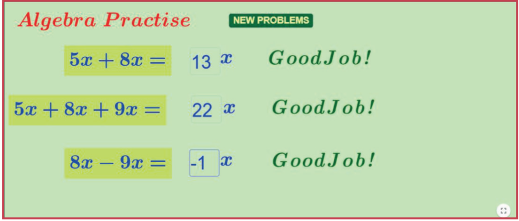
Step 1
Open the Browser type the URL Link given below (or) Scan the QR Code. GeoGebra work sheet named “seventh standard Algebra” will open. Click on “NEW PROBLEMS” to get new questions.
Step 2
Enter the correct number in the input box and enter. If the answer is correct it will show “Great Job”. Practice more and more problems.
Step 1
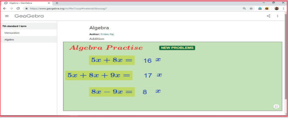
Step 2
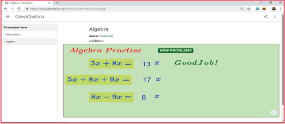
Browse in the link
Algebra: https://ggbm.at/tbxusqg7
or Scan the QR Code.